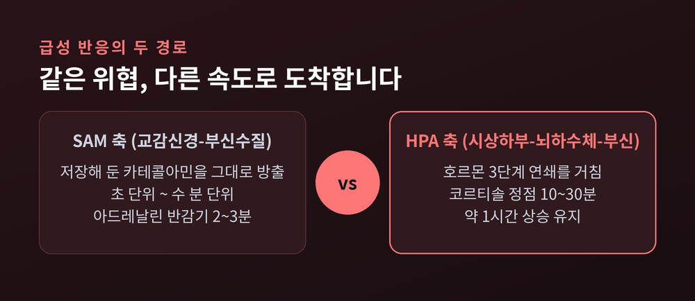
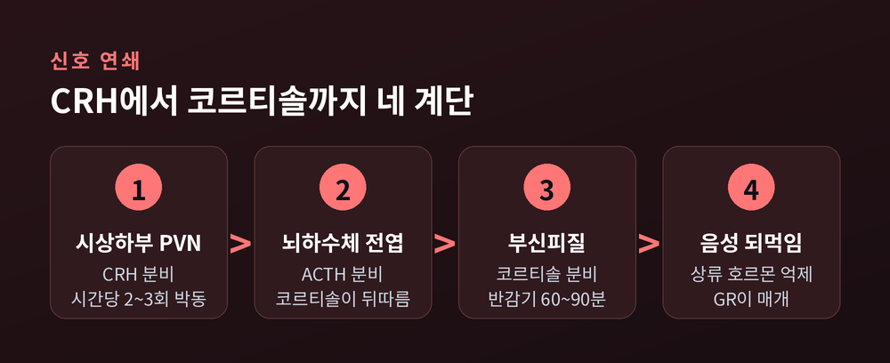
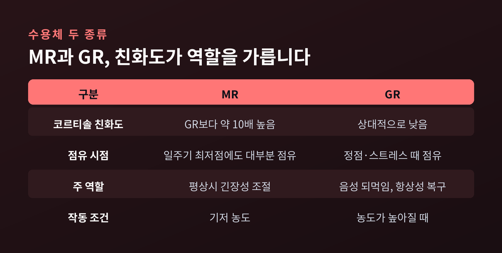
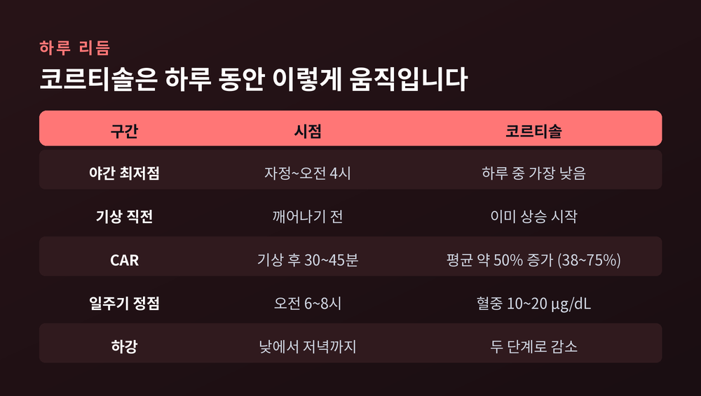
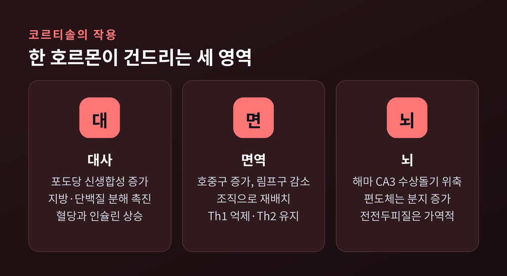
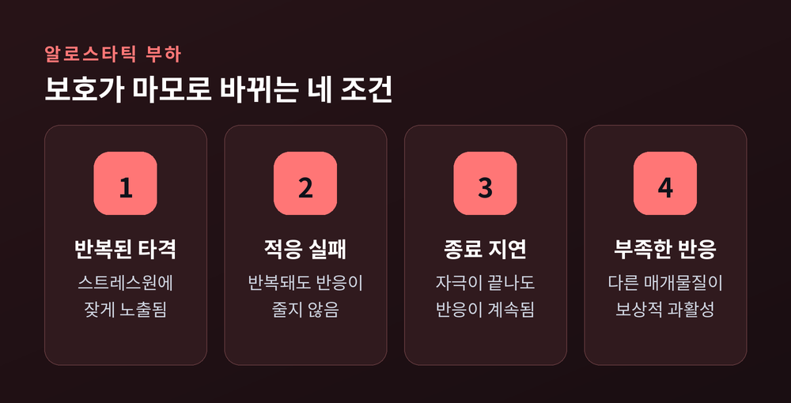

코르티솔과 HPA 축, 스트레스가 온몸을 바꾸는 경로
초 단위 반응부터 알로스타틱 부하까지

이번 글에서는 스트레스 반응의 생물학을 정리해 보겠습니다. 위협을 느낀 순간부터 호르몬이 온몸을 돌아 되돌아오기까지, 어떤 경로가 어떤 속도로 작동하는지 순서대로 짚겠습니다. 급성 반응의 두 갈래에서 시작해 만성 스트레스의 귀결까지 이어가겠습니다.
스트레스는 두 갈래로 몸에 도착합니다
몸에는 속도가 다른 두 개의 스트레스 경로가 있습니다. 두 경로는 경쟁하지 않고 시차를 두고 겹칩니다.
첫 번째는 SAM 축입니다. 교감신경-부신수질 축이라고 부릅니다. 중추 교감신경의 출력이 흉수에서 내려와 내장신경을 타고 부신수질에 닿습니다. 거기서 아세틸콜린이 크로마핀 세포에 작용하면 세포막의 칼슘 투과성이 올라갑니다. 칼슘이 들어오면 이미 만들어 저장해 둔 카테콜아민 과립이 그대로 혈액으로 쏟아집니다.
핵심은 합성 단계를 건너뛴다는 점입니다. 시냅스 한 단계만 거치고 재고를 꺼내 쓰기 때문에, 심박과 혈압에 대한 효과가 초 단위에서 수 분 단위로 나타납니다.
빠른 만큼 짧습니다. 아드레날린의 혈장 반감기는 약 2~3분에 불과합니다. 빠르게 켜지고 빠르게 꺼지는 시스템인 셈입니다.
두 번째가 HPA 축, 시상하부-뇌하수체-부신 축입니다. 이쪽은 호르몬이 세 계단을 내려가야 합니다. 그만큼 느립니다. 혈중과 타액의 코르티솔은 스트레스 사건이 지난 뒤 10~30분에 정점에 오르고, 약 한 시간가량 높은 상태를 유지합니다.
실험실에서도 같은 패턴이 확인됩니다. 청중 앞 발표와 암산 과제를 시키는 트리어 사회적 스트레스 검사(TSST)에서, 타액 코르티솔은 대체로 15~30분 사이에 정점을 찍습니다. 연구마다 기준점이 달라 편차가 있기는 합니다. 반응자 판정에는 흔히 1.5 nmol/L 증가를 기준으로 삼는데, 이 기준으로 보면 참가자의 약 63%가 유의한 상승을 보였습니다.
두 축을 합치면 이렇게 정리됩니다. 반응은 몇 초 안에 시작해 며칠까지 이어질 수 있습니다.

CRH에서 코르티솔까지, 세 계단을 내려가는 신호
HPA 축의 연쇄는 단순합니다. 단순하기 때문에 느립니다.
시상하부 실방핵(PVN)이 CRH를 내보냅니다. CRH는 뇌하수체 전엽의 코르티코트로프 세포를 자극해 ACTH를 분비시킵니다. ACTH는 혈류를 타고 부신에 닿아 피질 다발대에서 코르티솔을 만들게 합니다. 그리고 코르티솔은 다시 올라가 CRH와 ACTH를 억제합니다.
흥미로운 사실이 하나 있습니다. 이 축은 스트레스가 없을 때도 쉬지 않습니다.
CRH와 바소프레신은 평상시에도 박동성으로 분비됩니다. 대략 시간당 두세 번입니다. 이른 아침에는 이 박동의 진폭이 커지면서 ACTH와 코르티솔의 분비 버스트도 함께 커집니다. 10분 간격으로 채혈해 보면 ACTH 펄스 직후에 코르티솔 펄스가 따라붙는 짧은 지연이 보입니다.
펄스의 간격은 보고마다 다릅니다. 분비율을 역산하는 방식에서는 80~110분, 혈장 농도의 봉우리를 세는 방식에서는 세 시간에 가깝게 잡힙니다. 문헌에서는 대체로 "거의 한 시간에 한 번"이라는 표현을 씁니다. 측정 대상이 다르니 숫자가 다른 것이지, 어느 한쪽이 틀린 것은 아닙니다.
이 울트라디안 박동은 낭비가 아닙니다. 박동성 자체가 HPA 축과 뇌의 반응성을 최적 상태로 유지합니다. 농도를 일정하게 유지하는 것보다, 끊었다 이었다 하는 쪽이 수용체를 더 민감하게 지킵니다.
혈중 코르티솔의 성질도 함께 봐 두시면 좋겠습니다. 정상 성인의 오전 6~8시 혈중 농도는 10~20 µg/dL 범위이고, 혈장 반감기는 60~90분입니다. 그리고 전체의 약 90%는 코르티코스테로이드 결합 글로불린 같은 단백질에 붙어 있습니다. 실제로 수용체에 작용하는 것은 남은 자유 분획뿐입니다.

같은 호르몬, 두 개의 수용체
코르티솔은 하나인데 받는 쪽은 둘입니다. MR(무기질코르티코이드 수용체) 과 GR(글루코코르티코이드 수용체) 입니다.
둘의 결정적 차이는 친화도입니다. MR은 GR보다 코르티솔에 약 10배 강하게 결합합니다. 그래서 코르티솔이 가장 낮은 일주기 최저점에서도 MR은 이미 대부분 채워져 있습니다.
GR은 다릅니다. 친화도가 낮아 코르티솔이 충분히 높아져야 비로소 점유되기 시작합니다. 일주기 정점이나 스트레스 반응이 바로 그 조건입니다.
결과적으로 분업이 생깁니다. MR은 평상시의 긴장성 조절과 초기 판단을 맡고, GR은 농도가 올라간 뒤에 음성 되먹임을 걸어 상황을 되돌립니다. 코르티솔 농도가 스스로 스위치 역할을 하는 구조입니다.
되먹임을 거는 자리는 뇌하수체와 시상하부에 그치지 않습니다. 해마 같은 상위 구조도 참여합니다. 해마와 내측 전전두피질은 대체로 HPA 축을 억제하는 쪽인데, 직접 누르는 것이 아니라 분계선조 침대핵이나 PVN 주변의 억제성 개재뉴런을 거친 간접 억제입니다.
반대 방향도 있습니다. 중심 편도체는 PVN의 CRH 뉴런 동원을 촉진합니다. 위협 단서 쪽으로 반응을 증폭시키는 회로인 셈입니다.
저혈당이나 면역 자극 같은 전신성 교란은 또 다른 길을 씁니다. 고립로핵의 노르아드레날린 투사가 PVN을 직접 흥분시킵니다. 예상되는 위협과 실제 생리적 교란이 서로 다른 경로로 들어온다는 뜻입니다.

아침에 높고 밤에 낮은 이유
코르티솔은 스트레스 호르몬이기 전에 리듬 호르몬입니다.
분비는 기상하기 전부터 이미 올라가기 시작합니다. 몸이 깨어날 준비를 먼저 합니다. 이어 기상 직후에 큰 분비 버스트가 한 번 일어나고, 하루에 걸쳐 두 단계로 내려가 자정에서 새벽 4시 사이의 최저점에 도달합니다.
기상 직후의 그 버스트를 CAR(기상 후 코르티솔 반응) 라고 부릅니다.
수치로 보면 이렇습니다. 기상 후 코르티솔은 38~75%, 평균 약 50% 증가해 기상 30~45분 뒤에 정점에 오릅니다. 건강한 사람의 약 77%에서 관찰됩니다. 타액으로 재면 기상 시점 평균 약 15 nmol/L에서 30분 뒤 약 23 nmol/L 수준입니다.
다만 개인차가 큽니다. 자유 타액 코르티솔 기준으로는 증가폭이 50%에서 156%까지 벌어진다는 보고도 있습니다. 하나의 정상값을 정해 두고 줄을 세울 수 있는 지표는 아닙니다.
CAR는 하루 전체 코르티솔 산출량 가운데서도 유난히 큰 단일 버스트입니다. 개인 안에서는 비교적 안정적으로 반복되기 때문에, HPA 축 기능을 살피는 지표로 널리 쓰입니다.

코르티솔이 온몸에서 하는 일
코르티솔은 특정 장기의 호르몬이 아닙니다. 거의 모든 조직에 수용체가 있습니다.
대사 쪽에서는 포도당 신생합성을 늘리고, 지방과 단백질의 분해를 촉진합니다. 결과적으로 혈당과 인슐린이 올라갑니다. 근육과 뇌에 지금 당장 쓸 연료를 몰아주는 재분배입니다. 단기적으로는 합리적인 선택입니다.
면역 쪽은 오해가 많은 영역입니다. 급성기에 코르티솔은 면역세포를 없애는 것이 아니라 재배치합니다. 호중구는 늘고 림프구·호산구·단핵구는 줄어듭니다. 하이드로코르티손 투여 실험에서 말초혈 림프구는 4~6시간에 최저점을 찍고 24시간 안에 기저치로 돌아왔습니다. 사라진 것이 아니라 조직으로 이동한 것입니다.
질적인 변화도 있습니다. 글루코코르티코이드는 Th1과 Th17 반응을 우선 억제하고 Th2와 조절 T세포 기능은 유지하거나 촉진합니다. 면역을 끄는 것이 아니라 방향을 트는 쪽에 가깝습니다.
핵심은 노출 시간입니다. 일시적 노출은 사이토카인 생산의 패턴을 바꾸는 데 그치지만, 지속적 노출은 합성 자체를 억제합니다. 급성과 만성의 결과가 갈리는 지점이 여기입니다.
뇌 쪽에서는 더 선명한 대비가 나타납니다. 해마에서는 CA3 추체세포의 수상돌기가 위축되고 치상회의 신경 신생이 둔화됩니다. 편도체는 정반대입니다. 기저외측 편도체의 수상돌기 분지가 오히려 늘어나고 시냅스 연결이 강해집니다. 전전두피질도 위축되지만, 스트레스원이 사라지면 상당 부분 되돌아옵니다.
한 문장으로 줄이면 이렇습니다. 만성 스트레스는 브레이크를 약하게, 액셀을 강하게 만듭니다.

알로스타틱 부하 — 보호가 마모로 바뀌는 지점
지금까지의 이야기는 전부 정상 반응입니다. 문제는 그 정상 반응이 멈추지 않을 때 생깁니다.
브루스 맥퀸과 엘리엇 스텔라는 1993년에 알로스타틱 부하라는 개념을 제안했습니다. 만성적인 신체적·심리사회적 부담 때문에 몸에 누적되는 마모를 가리킵니다.
바탕에 깔린 개념은 알로스타시스, 곧 "변화를 통한 안정"입니다. 몸은 고정된 값을 고집하지 않습니다. 상황에 맞춰 설정값을 옮기며 버팁니다. 1차 매개물질은 코르티솔, 에피네프린, 노르에피네프린, 그리고 DHEA-S입니다.
맥퀸은 부하로 넘어가는 조건을 네 가지로 정리했습니다.
- 반복된 타격 — 여러 스트레스원에 잦게 노출되는 경우
- 적응 실패 — 같은 자극이 반복돼도 반응이 줄지 않는 경우
- 종료 지연 — 스트레스원이 사라졌는데 반응이 꺼지지 않는 경우
- 부족한 반응 — 오히려 반응이 모자라 다른 매개물질이 보상적으로 과활성되는 경우
네 번째가 특히 직관에 어긋납니다. 글루코코르티코이드 분비가 모자라면, 평소 그것에 눌려 있던 사이토카인이 풀려나 염증이 커집니다. 과해도 문제, 모자라도 문제라는 뜻입니다.

만성 스트레스가 남기는 것
가장 먼저 무너지는 것은 농도가 아니라 리듬입니다.
HPA 축이 만성 스트레스로 조절 이상에 빠지면 일주기 기울기가 납작해집니다. 아침에 높고 밤에 낮은 정상 곡선 대신, 하루 종일 비슷하게 유지되거나 저녁에 오르는 패턴이 나타납니다.
대사 쪽 결과는 비교적 일관되게 보고됩니다. 코르티솔과 카테콜아민의 장기 노출은 인슐린 저항성, 내장지방 축적, 전신 염증에 기여합니다. 만성 스트레스와 고당·고지방 식사가 겹치면 식사 단독일 때보다 내장지방 축적이 더 강하게 나타난다는 실험 결과도 있습니다.
회복도 한 번에 오지 않습니다. 장기간의 스트레스 이후, 코르티솔 반응이 정상으로 돌아온 뒤에도 ACTH 반응은 수 주간 둔화된 채로 남습니다. 층마다 회복 속도가 다릅니다.
예전에는 스트레스를 "마음의 문제"로 놓고 설명했습니다. 지금은 분비 시점과 수용체 점유율, 리듬의 기울기라는 물리적 언어로 상당 부분 서술할 수 있습니다.
물론 한계도 분명합니다. 여기 적은 수치들은 대부분 집단 평균이고, 개인차와 측정 방식에 따른 편차가 큽니다. 코르티솔 한 값으로 누군가의 상태를 판정할 수는 없습니다.
정리하면 이렇습니다. 스트레스 호르몬은 적이 아닙니다.
— 같은 분자가 짧게는 몸을 지키고, 길게는 몸을 깎습니다. 보호와 손상이 갈리는 자리는 세기가 아니라 지속 시간입니다.
그래서 중요한 것은 반응을 없애는 일이 아니라, 반응이 제때 꺼지도록 두는 일입니다. 다만 이 글은 일반적인 생리학 설명일 뿐입니다. 수면이나 피로, 기분의 변화가 오래 이어진다면 혼자 판단하지 마시고 의료 전문가와 상담하시길 권합니다.
오늘 하루도 어딘가에서 코르티솔이 한 번 솟았다 가라앉았을 것입니다. 그 곡선이 제자리로 내려앉을 시간을, 스스로에게 남겨 두시면 좋겠습니다.